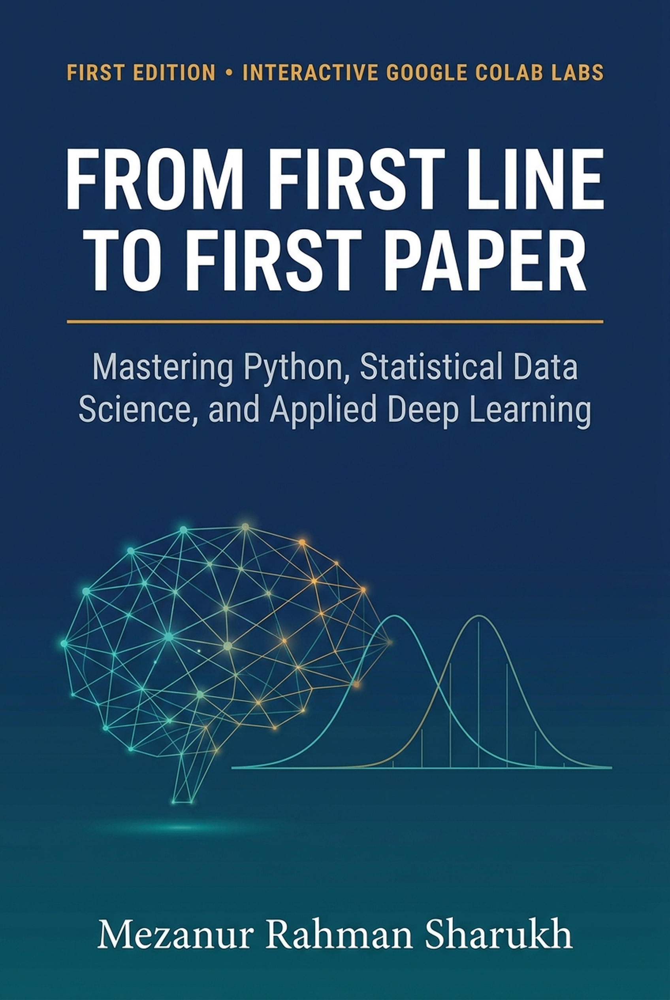

From First Line to First Paper
Mastering Python, Statistical Data Science, and Applied Deep Learning
Preface

Welcome to From First Line to First Paper: Mastering Python, Statistical Data Science, and Applied Deep Learning — a complete, zero-to-researcher textbook and interactive Google Colab curriculum authored by Mezanur Rahman Sharukh (M.Sc. Statistician | Public Health & Machine Learning Researcher).
Who This Book Is Written For
This book makes zero assumptions about your prior programming experience. Whether you are a public health student opening a coding environment for the first time, a biostatistician moving from SPSS/Stata to Python, or an aspiring machine learning researcher who wants to understand every equation and line of code from first principles, every chapter builds step-by-step without skipping a single link in the chain.
By the end of Part VII, you will not merely “know Python syntax”—you will think like a disciplined Research Software Engineer and Applied ML/DL Scientist, capable of taking raw epidemiological or clinical datasets all the way to leakage-free models, PyTorch architectures, systematic ablation studies, subgroup fairness audits, and reproducible research repositories.
How the Dual-Synced Book + Google Colab Ecosystem Works
Every single chapter in this textbook is paired 1-to-1 with interactive Google Colab notebooks stored in our dual-mirrored companion ecosystem:
- GitHub Repository (Live Colab Links): github.com/sharukh01621/first-line-to-first-paper
- Google Drive Mirror Folder (Full Curriculum & Datasets): Open Shared Google Drive Folder
- Walkthrough Notebook (
01_walkthrough.ipynb): Contains every code snippet and “Break It On Purpose” error lab printed in the chapter verbatim. - Guided To-Do Notebook (
02_guided_todos.ipynb): Hands-on exercises with# YOUR CODE HEREslots, 3-tier progressive hints (tutor.hint(..., level=1..3)), and friendly diagnostic checks (tutor.check(...)) powered by our companion packagesharukh-tutor(installed automatically from the GitHub repository in Step 0 of every notebook and packaged cleanly for PyPI distribution). - Chapter Coding Exam (
03_coding_exam.ipynb): A realistic 100-point assessment graded automatically withtutor.check_exam(...). - Annotated Solution Notebooks (
solutions/.../*_SOLUTION.ipynb): Complete worked solutions paired with debugging post-mortems explaining the most common mistakes and how to avoid them.
Quick-Start Onboarding Hub (Click or Scan)
| Onboarding Lab | Interactive Google Colab Launch Link | Scan (Print) |
|---|---|---|
| Curriculum Index | 00_START_HERE.ipynb | |
| 2-Minute Setup | 00_setup / 00_colab_orientation.ipynb |
Before starting Chapter 1, open the Colab Orientation Notebook (00_setup/00_colab_orientation.ipynb), click File \(\rightarrow\) Save a copy in Drive, and run its three welcome cells to verify your runtime and preview our Public Health spine datasets.
The Researcher’s 4-Step Problem-Structuring Blueprint
Beginners often stare at a blank code cell and freeze because they try to write Python syntax before designing the logic. Throughout all 36 chapters, before we write a single line of code for any non-trivial problem, we complete this 4-step blueprint:
- Inputs & Units: What exact values enter the problem, what data types are they, and what units (kg, cm, mmHg, per 100,000) do they carry?
- Edge Cases & Traps: What could silently go wrong? (Zero denominators, missing survey codes like
999, wrong operator precedence, floating-point truncation, data leakage.) - Step-by-Step Algorithm: Plain-English ordered steps written before Python.
- Verification Plan: Hand-calculated or domain-bounded sanity checks proving the output makes scientific sense.
Visual Callout Legend
- Mental Model (
Note): Diagrams and analogies showing what happens inside Python’s memory and interpreter. - Researcher’s Note (
Tip): Statistical, epidemiological, and reproducible-science best practices. - Common Trap (
Warning): Subtle bugs that run without crashing and silently corrupt analyses. - Break It On Purpose (
Important): Controlled experiments that trigger real Python errors so you learn to read tracebacks calmly and confidently.
Master 7-Part Curriculum Roadmap (First Edition, ~860 Pages)
| Part | Chapters | Core Mastery Milestone | Print Pages |
|---|---|---|---|
| Part I | Ch 1–6 | Computational Thinking & Python from Absolute Zero | ~110 |
| Part II | Ch 7–11 | Core Data Structures, Algorithms & Defensive Programming | ~105 |
| Part III | Ch 12–15 | OOP, Jupyter/Colab Engineering, VS Code & Git | ~90 |
| Part IV | Ch 16–20 | NumPy, Pandas, Survey Cleaning, Visualization & Biostatistics | ~115 |
| Part V | Ch 21–26 | Classical Machine Learning — Scratch Math to Leakage-Free Pipelines | ~140 |
| Part VI | Ch 27–32 | Deep Learning — NumPy Backprop to PyTorch, CNNs & Transformers | ~145 |
| Part VII | Ch 33–36 | Rigorous Experiments, Ablation Studies, Fairness & Capstone Paper | ~115 |
| Appendices | A–E | Cheat Sheets, Math Refresher, Top-50 Errors, Colab Index & References | ~50 |